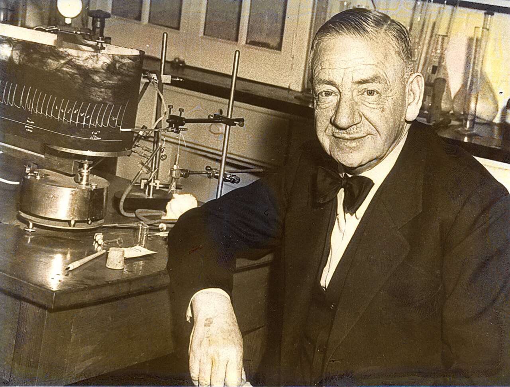
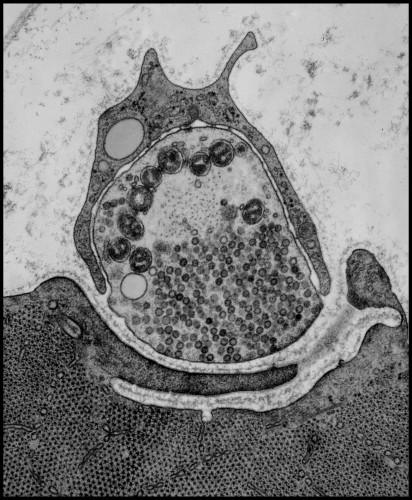

神经冲动的产生和传导（下）：兴奋在神经元之间的传递
本期导读
（下）兴奋在神经元之间的传递

视频原话 · 导读3 句
- 同学们好！这节课梳理人教版选择性必修一第二章第三节的后半部分——兴奋在神经元之间的传递。9.5s
- 照片里是药理学家勒维，他用蛙心实验证明了神经靠化学物质传递信号。这一节常考突触的传递过程、药物作用机理和跨突触的电表偏转。13.5s
- 我们按八个考点梳理，每个考点都讲清楚怎么考、怎么做。5.5s
突触的结构01#

轴突—细胞体型
轴突—树突型
易错
突触小体 ≠ 突触；突触 = 前膜 + 间隙 + 后膜
视频原话5 句
- 考点一，突触的结构。轴突末梢经过多次分支，末端膨大形成突触小体，与其他神经元的细胞体或树突相接近，形成突触。12.7s
- 突触由突触前膜、{突触间隙|brown}和突触后膜三部分组成。突触小体内有许多突触小泡，里面装着神经递质。10.4s
- 右边是突触的电子显微镜照片，可以看到突触小体里密密麻麻的突触小泡。7.1s
- 常见的突触类型有两种：轴突—细胞体型和轴突—树突型。5.7s
- 易错：突触小体不等于突触。突触小体只是轴突末梢膨大的部分，突触则包括前膜、间隙、后膜三部分。11.0s
兴奋的传递过程02#
① 突触小泡与前膜融合，胞吐释放递质
② 递质扩散通过突触间隙
③ 与后膜上的特异性受体结合
④ 后膜电位变化 → 兴奋或抑制
- 电信号
- 突触小体 →化学信号
- 突触后膜 →电信号
考法
胞吐消耗能量、体现膜的流动性；突触小体内线粒体多
易错
突触小体：电→化学；突触后膜：化学→电
视频原话5 句
- 考点二，传递过程。兴奋传到突触小体，突触小泡移向突触前膜，与前膜融合，以胞吐的方式释放神经递质。11.1s
- 神经递质扩散通过突触间隙，与突触后膜上的特异性受体结合，引起后膜电位变化，使下一个神经元兴奋或抑制。11.0s
- 信号的转换是：电信号→化学信号→电信号。6.0s
- 考法：胞吐需要消耗能量，体现了膜的流动性，所以突触小体内线粒体较多。7.8s
- 易错：在突触小体完成的是“电信号→化学信号”，在突触后膜完成的是“化学信号→电信号”。8.5s
神经递质的种类与去向03#
常见的神经递质
乙酰胆碱
氨基酸类（谷氨酸、甘氨酸）
多巴胺
去甲肾上腺素
5-羟色胺
一氧化氮等
发挥作用后的去向
① 被相应的酶降解
② 被回收进突触前膜（转运体）
② 被回收进突触前膜（转运体）
考法
递质不能及时降解或回收 → 持续作用于后膜 → 下一个神经元持续兴奋或持续抑制
视频原话3 句
- 考点三，神经递质的种类与去向。常见的神经递质有乙酰胆碱，谷氨酸、甘氨酸等氨基酸类，多巴胺、去甲肾上腺素、5-羟色胺，还有一氧化氮等。14.4s
- 神经递质发挥作用后，会被降解，或被回收进突触前膜，以免持续发挥作用。7.4s
- 考法：如果递质不能被及时降解或回收，就会持续作用于后膜，使下一个神经元持续兴奋或持续抑制。10.0s
兴奋性与抑制性递质04#
兴奋性递质
阶段 1/2
阶段 2/2
后膜变为外负内正，产生动作电位
抑制性递质
仍为外正内负，电位差更大，更难兴奋
易错
抑制性递质也使后膜电位发生变化，只是没有产生动作电位
视频原话3 句
- 考点四，兴奋性递质和抑制性递质。兴奋性递质与受体结合后，后膜对Na+的通透性增加，Na+内流，后膜变为外负内正，产生动作电位。14.4s
- 抑制性递质与受体结合后，常使后膜的Cl-通道开放，Cl-内流，后膜仍是外正内负，而且电位差更大，更难兴奋。11.6s
- 易错：抑制性递质也使后膜的电位发生了变化，只是没有产生动作电位，后膜依然是外正内负。9.1s
单向传递与突触延搁05#
原因：递质只存在于突触小泡中，只能由突触前膜释放，作用于突触后膜
突触延搁：释放 → 扩散 → 与受体结合，需要时间 → 突触处传递比神经纤维上慢
考法
突触越多，反射所需时间越长；反射弧中单向传递，原因在突触
视频原话4 句
- 考点五，兴奋在神经元之间只能单向传递。4.7s
- 原因是：神经递质只存在于突触前膜内的突触小泡中，只能由突触前膜释放，作用于突触后膜。9.3s
- 兴奋经过突触时，要经历递质的释放、扩散和与受体结合，需要较长时间，这叫{突触延搁|brown}。所以兴奋在突触处的传递比在神经纤维上的传导{慢|brown}。14.0s
- 考法：反射弧中的突触数目越多，完成反射所需的时间就越长；兴奋在反射弧中只能单向传递，原因就在突触。10.8s
药物、毒素的作用机理06#
| 作用方式 | 实例 | 后膜 / 肌肉的结果 |
|---|---|---|
| 阻断受体 | 箭毒与乙酰胆碱受体结合 | 递质不起作用，肌肉松弛 |
| 抑制递质降解 | 有机磷农药抑制乙酰胆碱酯酶 | 持续作用，肌肉持续收缩（震颤、痉挛） |
| 抑制递质释放 | 肉毒毒素 | 递质不能释放，肌肉无法收缩 |
| 阻止递质回收 | 可卡因 | 间隙中递质增多，作用增强 |
解题方法
先找作用位点：释放、与受体结合、降解和回收；再推后膜是持续兴奋还是不能兴奋
视频原话6 句
- 考点六，药物和毒素怎样作用于突触？常见的有四种方式。6.2s
- 一是阻断受体：比如箭毒与乙酰胆碱受体结合，递质不能发挥作用，肌肉松弛，不能收缩。9.0s
- 二是抑制递质降解：比如有机磷农药抑制乙酰胆碱酯酶，乙酰胆碱持续作用，肌肉持续收缩，出现震颤、痉挛。10.8s
- 三是{抑制递质释放|brown}：比如肉毒毒素阻止乙酰胆碱释放，肌肉{无法收缩|brown}。7.1s
- 四是阻止递质回收，使突触间隙中的递质增多，作用增强，可卡因就是这样起作用的。8.1s
- 解题方法：先判断药物影响的是递质的{释放|brown}、与受体结合，还是降解和回收，再推出后膜是持续兴奋还是不能兴奋。11.2s
可卡因与成瘾机制07#
正常：多巴胺被前膜上的转运体回收
可卡因：转运体失去回收功能 → 多巴胺持续作用 → 强烈愉悦感
长期：后膜多巴胺受体减少 → 停药后作用减弱 → 需更多毒品 → 毒瘾
考法
转运体失去回收功能 → 多巴胺持续作用 → 受体减少 → 需更多毒品维持
视频原话5 句
- 考点七，滥用兴奋剂、吸食毒品的危害，以可卡因为例。5.8s
- 正常情况下，多巴胺发挥作用后，会被突触前膜上的多巴胺转运体回收。6.9s
- 可卡因会使转运体失去回收多巴胺的功能，多巴胺留在突触间隙，持续刺激突触后膜，使人产生强烈的愉悦感。10.7s
- 长期这样，突触后膜上的多巴胺受体减少。一旦停药，多巴胺的作用减弱，人就需要更多毒品来维持兴奋，形成毒瘾。11.6s
- 考法：问可卡因成瘾的机理，答出“转运体失去回收功能→多巴胺持续作用→受体减少→需要更多毒品维持”。11.0s
跨突触的电表偏转08#
刺激a左侧
→ 偏转两次，方向相反
刺激b右侧
→ 只偏转一次
刺激突触前、距a和b相等的点
→ 偏转两次（突触延搁）
解题方法
先看能否过突触（只能前膜 → 后膜）；再比先后：经过突触的一侧更慢
视频原话5 句
- 考点八，跨突触的电表偏转。两个电极放在膜外：a在突触前的神经元上，b在突触后的神经元上。9.8s
- 刺激a左侧，兴奋先到a，再经过突触到b，指针偏转两次，方向相反。7.4s
- 刺激b右侧，兴奋只能到b，不能逆着突触传到a，指针只偏转一次。6.9s
- 刺激突触前、到a和b距离相等的一点，因为{突触延搁|brown}，兴奋先到a、后到b，指针仍然偏转两次。9.6s
- 解题方法：先看兴奋能不能过突触，只能从前膜传到后膜；再比较到达两电极的先后，经过突触的一侧要{更慢|brown}。10.6s
易错速查✓
先自己判断，再点按钮查看对错与解析。
- 1突触由突触前膜、突触间隙和突触后膜构成说法正确。
- 2神经递质以主动运输的方式释放说法错误：以胞吐的方式释放
- 3抑制性递质作用后，突触后膜电位不变说法错误：Cl⁻内流，外正内负的电位差增大
- 4兴奋在突触处的传递比在神经纤维上慢说法正确。
- 5有机磷农药使肌肉持续收缩说法正确。
- 6可卡因使多巴胺受体增多而成瘾说法错误：使受体减少
盯住递质的去向，突触题一题不丢！
视频原话 · 易错速查5 句
- 最后，用六道判断题检验一下。3.6s
- 突触由突触前膜、突触间隙和突触后膜构成？对。神经递质以主动运输的方式释放？错，是胞吐。11.1s
- 抑制性递质作用后，突触后膜电位不变？错，Cl-内流，外正内负的电位差增大。兴奋在突触处的传递比在神经纤维上慢？对。13.5s
- 有机磷农药使肌肉持续收缩？对。可卡因使多巴胺受体增多而成瘾？错，是受体减少。10.1s
- 八个考点串起来：看清突触结构，跟着递质走完释放、结合、降解或回收，再分析药物和电表。掌握这些，这一节就能稳稳拿分！我们下期再见！14.4s
图片来源
图片来源：Wikimedia Commons —— Institute of Pharmacology, Graz《Otto Loewi in the Institute of Pharmacology in Graz, Austria, with equipment》CC BY-SA 3.0 DE；John Heuser《HeuserNeuro》公有领域
Photo: Institute of Pharmacology Graz, CC BY-SA 3.0 DE